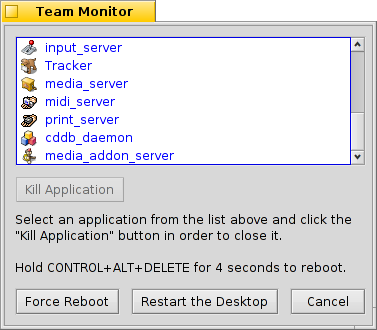

Русский
Русский Français
Français Deutsch
Deutsch Italiano
Italiano Español
Español Svenska
Svenska 日本語
日本語 Українська
Українська 中文 ［中文］
中文 ［中文］ Português
Português English
EnglishМонитор процессов (Team Monitor)
При помощи сочетания клавиш CTRL ALT DEL вы можете вызвать Монитор процессов, в котором отображается список всех запущенных приложений.
Приложения, которые были запущены системой, окрашены в синий цвет, а те, которые запустил пользователь - в черный.
Приложения, которые не отвечают, что обычно говорит о том, что программа работает некорректно, отмечены красным цветом. Вы можете убить программу, выбрав её и нажав кнопку .
Вы можете вызвать терминал используя горячие клавиши OPT ALT T.
Если файловый менеджер Tracker или панель задач Deskbar аварийно закрылись, либо повисли, то станет доступной кнопка: , которая позволит перезагрузить файловый менеджер Tracker и панель задач Deskbar.